数据来源：知识星球「南半球聊财经」星主 Jason 不跪 当日帖子（按美西时区 2026-06-21 计） 当日发帖数量：10 条
今日要点速览
今天 Jason 的 10 条帖子可以串成两条主线。第一条是"全球资金的再平衡"：新兴市场（韩国、台湾领涨，中国掉队）今年大涨、MSCI 新兴市场盈利四年来首次跑赢预期、人民币逆着强美元继续升值——多则信息都指向同一个故事：钱正在从"美国独大"往"非美/新兴市场"挪。第二条是"中国经济的结构之辩"：粤开证券说 A股"新动能"企业利润和 ROE 已经接近甚至反超"旧动能"，但吸纳就业、贡献税收偏弱；李迅雷则更悲观，从"因果律"讲到 GDP 高增长未必创造就业、产能过剩压低 ROE。再加上高盛下调全球手机出货、广发的高频 GDP 跟踪、穆迪的美国"K 型经济"，今天整体是一份"全球与中国的中观体检报告"。地缘方面有美伊在瑞士开启和谈、泽连斯基警告白俄罗斯两条短讯。
帖 1 ｜13:53 ｜高盛下调全球手机出货 #经济数据#
帖子原文：
高盛：下调全球智能手机出货预测：2026年全球手机出货预计同比下跌10%，原因是市场饱和和内存成本上升压制需求；但手机总销售额仍预计增长，因为产品结构继续向高端机、折叠屏和更高ASP升级。**全球智能手机市场已经饱和。**换机周期变长，消费者不再像早期智能手机周期那样频繁换机。#经济数据#
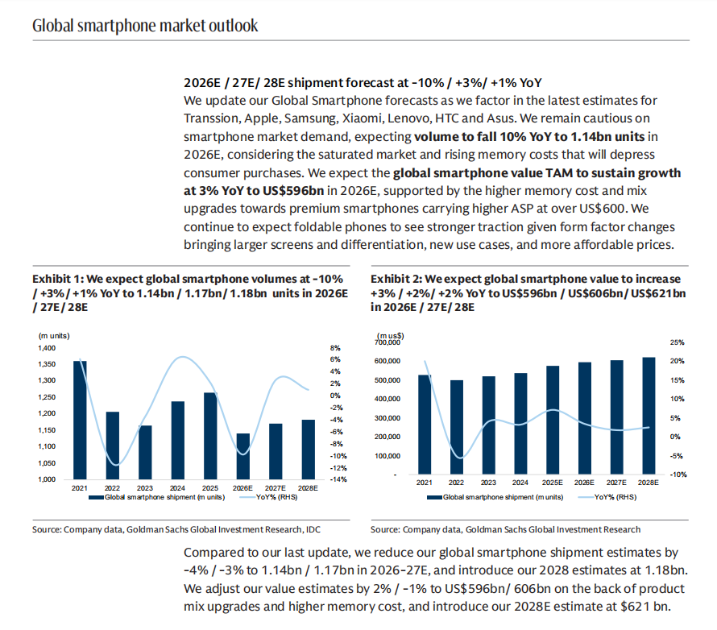
一句话核心： 手机"卖的台数"在缩水，但"卖的金额"还在涨——因为大家换机更慢、但每次换得更贵。
背景与关键数据： 高盛把 2026 年全球智能手机出货量的预测下修到同比 -10%。这里两个驱动：一是"市场饱和"（该有手机的人基本都有了），二是"内存成本上升"（DRAM/NAND 涨价推高手机成本、压制需求）。但它同时预计手机行业总销售额仍然增长，关键词是 ASP（Average Selling Price，平均售价）——即每台手机越卖越贵。原因是产品结构往高端机、折叠屏升级，单价提升抵消了销量下滑。
图片解读： 这是高盛研究的一页 PPT，标题是 Global smartphone market outlook，副标题写明 2026E 出货预测为 -10% y/y。下方几组柱状图按品牌/地区（Transsion 传音、Apple、Samsung、Xiaomi、Lenovo 等）拆分出货量，并配了 ASP/收入的对比图。整页传达的信号一致：销量（数量）承压、单价（金额）上行，这是一个典型的成熟行业"以价补量"的画面。
为什么重要： 对投资来说，"出货量见顶"意味着靠"卖更多台"成长的逻辑结束了，市场会更看重产业链里能吃到"涨价/升级"红利的环节——比如高端芯片、折叠屏铰链、光学、内存。对手机品牌本身，估值逻辑从"走量"转向"提利润率"。Jason 把它放在第一条，等于给今天定了"成熟期/存量博弈"的基调。
延伸知识： ASP 是消费电子和零售分析里最常用的拆解工具——收入 = 销量 × 单价（ASP）。当一个行业销量见顶，分析师就会盯 ASP 能不能扛住增长。类比汽车业：燃油车总销量早就见顶，但车企靠卖更贵的 SUV、电动车把营收做上去，就是同一个"以价补量"的故事。
帖 2 ｜14:09 ｜美伊在瑞士开启和谈 #金融#
帖子原文：
zerohedge：美国和伊朗在瑞士开始就和平协议进行谈判，万斯表示取得进展并将持续。#金融#
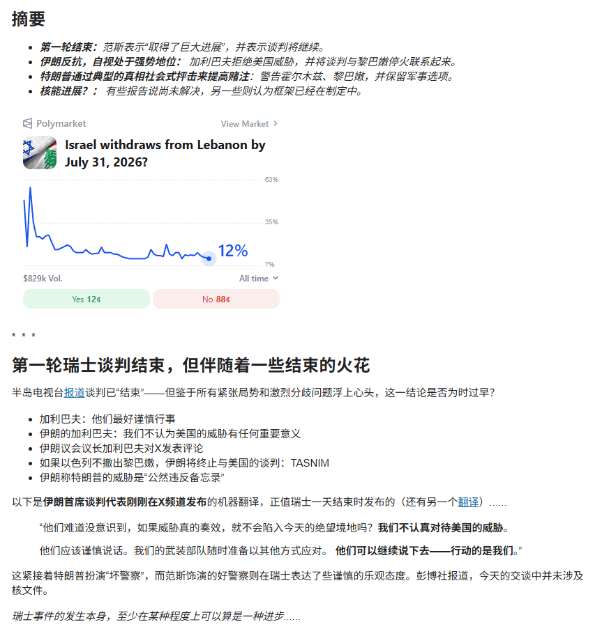
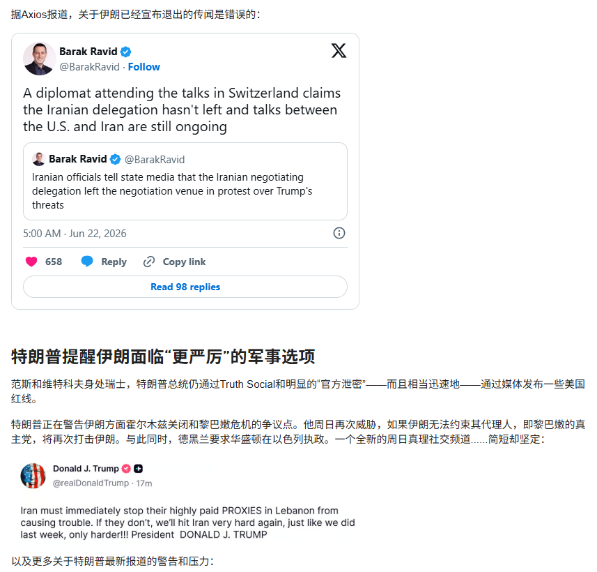
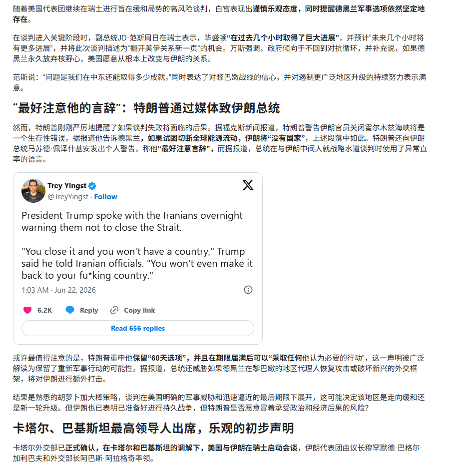
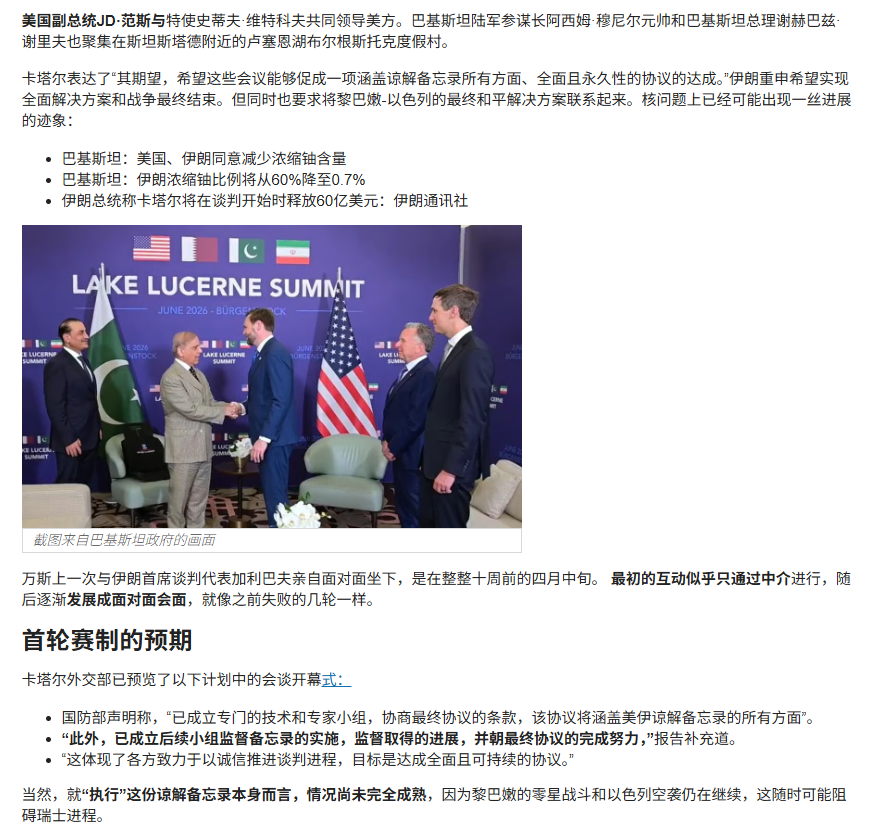
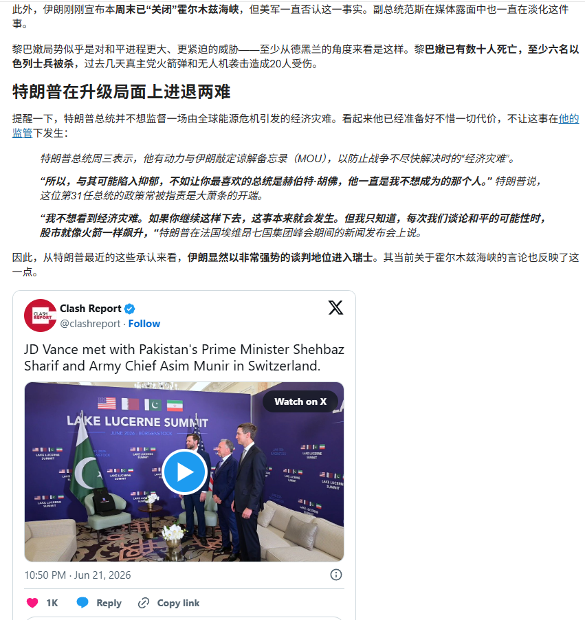
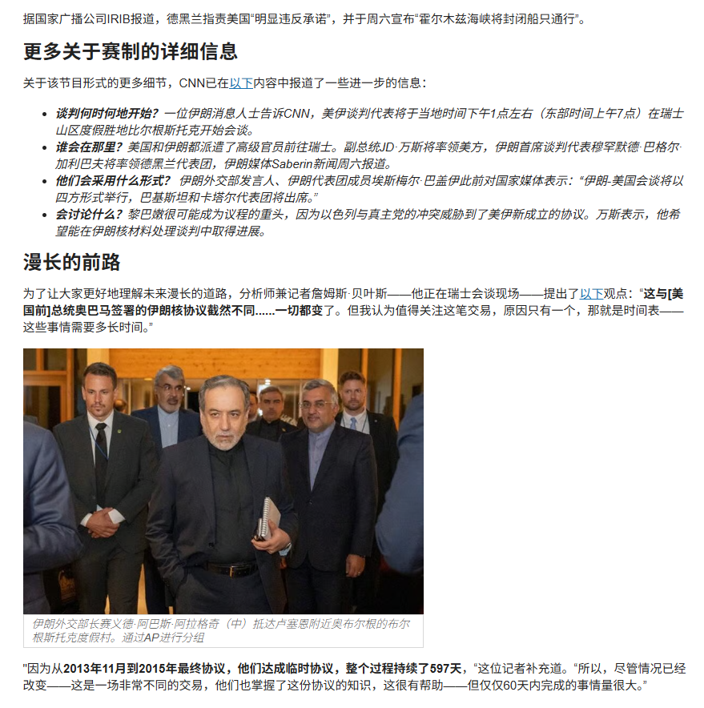
一句话核心： 美伊在瑞士（卢塞恩湖峰会）坐下来谈和平协议，副总统万斯放话"有进展"，市场在押注中东局势降温。
背景与关键数据： 转自财经博客 zerohedge 的长报道。核心事实：美伊代表在瑞士开始谈判，期间一度传出"伊朗代表团已退出"，但被路透/Axios 记者 Barak Ravid 引述外交官辟谣称谈判仍在继续；与此同时特朗普在自家社媒 Truth Social 喊话，警告伊朗停止支持黎巴嫩的"高薪代理人"，摆出"更严厉军事选项"的姿态——一边谈一边施压的典型套路。
图片解读：
- 图1（摘要 + 概率图）：文章摘要，配一张类似 Polymarket 的预测市场走势图，问题是"以色列是否在 2026 年 7 月 31 日前撤出黎巴嫩"，当前概率约 12%——说明市场对短期内局势彻底缓和的押注还很低。
- 图2、图3：嵌入的推文截图，包括记者 Barak Ravid 澄清"伊朗代表团未离开、谈判继续"，以及特朗普警告伊朗的帖子。
- 图4、图5：峰会现场照（标注 Lake Lucerne Summit 卢塞恩湖峰会），出现万斯与巴基斯坦总理夏巴兹·谢里夫、陆军参谋长阿西姆·穆尼尔同框，显示这是一场多方参与的外交场合。
- 图6：会谈前景/各方立场的补充说明。
为什么重要： 中东是全球油价的风险溢价来源。一旦美伊真走向缓和，市场通常会预期油价回落、避险情绪降温、风险资产受益；反之谈判破裂会推高油价和黄金。Jason 标 #金融# 而不是 #地缘#，意思是关注它对资产价格（油、避险、风险偏好）的传导。注意：单一谈判消息反复（"退出"又"没退出"）很常见，押注前要分清"噪音"和"实质进展"。
延伸知识： "预测市场"（如 Polymarket）用真金白银下注的赔率来反映群体对某事件发生概率的判断，常被当成比民调更灵敏的"事件温度计"。但它也会被情绪和流动性扭曲，看的时候要结合基本面，而不是把 12% 直接当成"科学概率"。
帖 3 ｜14:19 ｜A股"新动能"VS"旧动能" #经济数据#
帖子原文：
粤开：截至 2025 年底，A股 5391 家非金融上市公司中，2922 家为新动能企业，数量占比 54.2%。总量看，新动能贡献了约 30%的营收，50%的利润，其ROE领先旧动能近 2 个百分点，成长性、盈利性更突出。结构看，新动能企业吸纳就业弱、税收贡献弱，社会贡献的成色尚显不足；此外，客户与供应商较为集中，深度捆绑少数巨头，单一客户波动即可能引发业绩震荡。#经济数据#
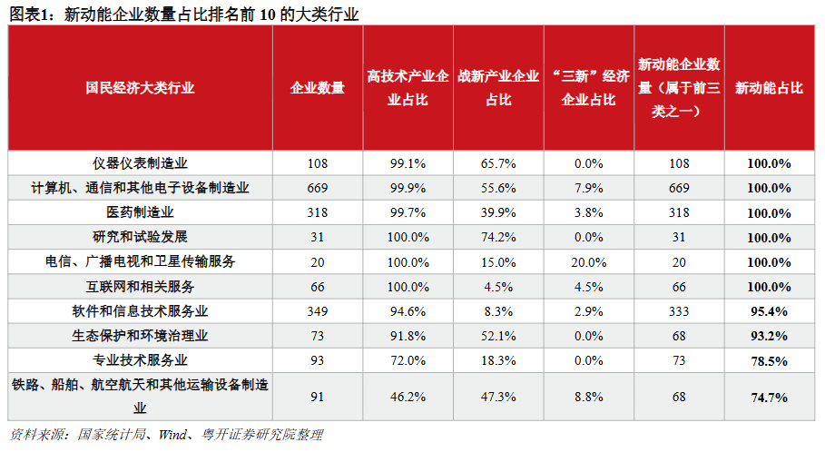
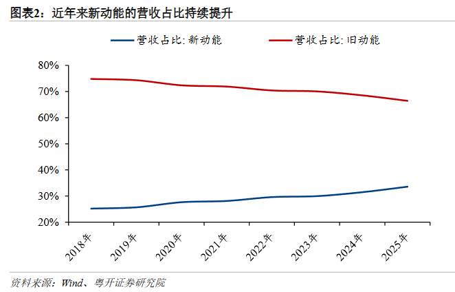
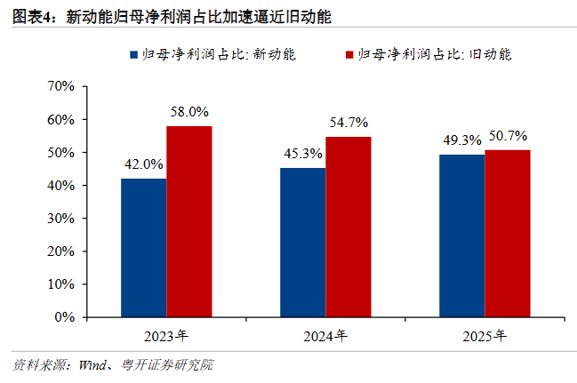
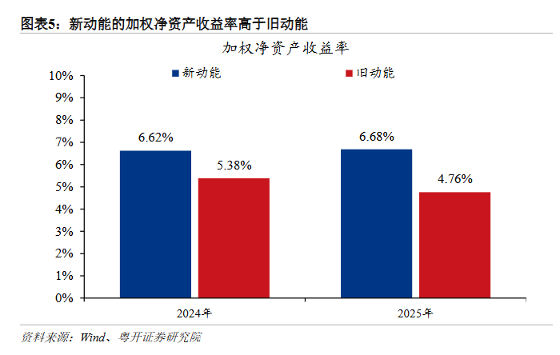
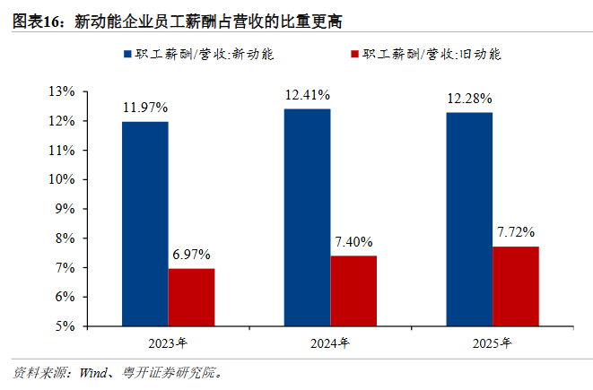
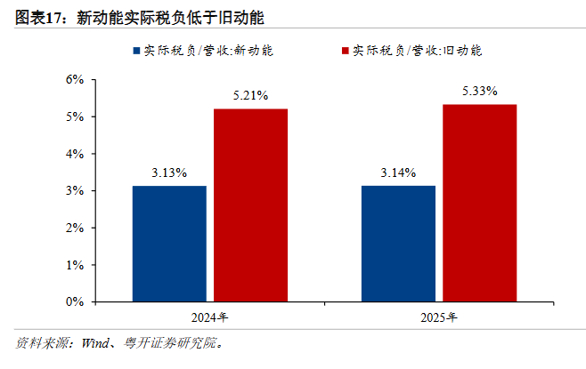
一句话核心： A股的"新动能"（高科技、战略新兴产业）已经是上市公司主力——数量过半、利润占一半、ROE 更高，但它们对就业和税收的拉动还偏弱，而且客户太集中、容易"一荣俱荣一损俱损"。
背景与关键数据： 粤开证券口径。"新动能"指高技术产业、战略性新兴产业、"三新"经济（新产业/新业态/新模式）这三类之一的企业。截至 2025 年底，A股 5391 家非金融上市公司里有 2922 家属于新动能，数量占比 54.2%；它们贡献约 30% 营收、50% 利润，ROE 领先旧动能近 2 个百分点。短板是吸纳就业弱、税收贡献弱，且客户/供应商集中度高（深度绑定少数巨头，单一大客户波动就可能引发业绩地震）。
图片解读：
- 图表1（行业表）：新动能企业数量占比排名前 10 的大类行业。仪器仪表制造、计算机通信和其他电子设备制造、医药制造等行业新动能占比高达 100%；软件和信息技术服务 95.4%、生态环保 93.2% 等。直观说明"新动能"主要集中在科技+医药+环保。
- 图表2（营收占比趋势）：2018→2025，新动能营收占比从约 25% 升到 33%，旧动能从约 75% 降到 66%——新动能在做大。
- 图表4（净利润占比）：归母净利润占比，新动能从 2023 年 42.0% 升到 2025 年 49.3%，旧动能从 58.0% 降到 50.7%，几乎打平。
- 图表5（ROE）：加权净资产收益率，新动能 2024/2025 为 6.62%/6.68%，旧动能为 5.38%/4.76%，差距在拉大（旧动能还在掉）。
- 图表16（员工薪酬/营收）：新动能约 12%，旧动能约 7%——新动能更"重人力"（养工程师贵）。
- 图表17（实际税负/营收）：新动能约 3.1%，旧动能约 5.2%——新动能享受更多税收优惠，所以税负低。
为什么重要： 这组数据是理解"中国经济转型成色"的一把尺子。好消息：上市公司层面，转型确实在发生，利润正从传统行业向科技/新兴行业转移。隐忧：新动能"赚钱强但养人、纳税弱"，加上客户高度集中，意味着它对宏观就业、财政的拉动不如旧的劳动密集型行业——这正好呼应了今天帖 8 李迅雷"GDP 增长未必创造就业"的担忧。对投资者，这支持"结构性看多科技龙头、谨慎看待传统周期"的思路。
延伸知识： ROE（净资产收益率）= 净利润 / 股东权益，衡量"每一块自有资本一年能赚多少"，是巴菲特最看重的盈利质量指标。同样赚 1 亿，用 10 亿本金赚到（ROE 10%）远比用 50 亿本金赚到（ROE 2%）更"高效"。新动能 ROE 高，说明它用更少的资本撬动了更多利润——这正是"轻资产、高附加值"的典型特征。
帖 4 ｜14:22 ｜新兴市场盈利四年来首超预期 #股市#
帖子原文：
bloomberg：MSCI新兴市场指数中的公司报告的平均年盈利首次超过一年前设定的预期，这是自2022年4月以来首次，这得益于亚洲科技公司和其他行业利润的提升。随着新兴市场股票今年上涨近30%，健康的利润增长迹象向多头表明，这场反弹正建立在坚实的基本面之上，而非投机泡沫。更强的盈利可能会促使更多资产管理人将资金转向新兴市场股票，美国投资组合权重从5%的调整可能转化为新兴市场配置的约30%增长。#股市#
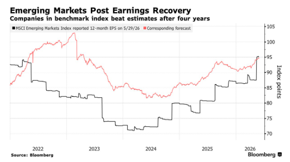
一句话核心： 新兴市场公司盈利四年多来第一次跑赢一年前的预期，给今年近 30% 的涨幅找到了"基本面"支撑——这不是纯炒作。
背景与关键数据： 彭博报道。MSCI 新兴市场指数成分股的平均年盈利首次超过一年前设定的预期，上一次出现是 2022 年 4 月（即四年多来首次），主要由亚洲科技公司利润提升带动。配合新兴市场股票今年涨近 30%，这意味着上涨有盈利改善托底。文章还提到一个资金面的推演：美国投资者若把投资组合里新兴市场的权重从约 5% 上调，可能转化为新兴市场配置约 30% 的增量资金。
图片解读： 彭博图表，标题 Emerging Markets Post Earnings Recovery（新兴市场盈利复苏）。两条线：黑线是 MSCI 新兴市场指数实际报告的 12 个月每股盈利（EPS，截至 2026/5/29），红线是对应的预期/预测。可以看到 2022 年后实际 EPS 长期低于预期（黑线在红线下方），但到 2026 年黑线快速抬头、重新追上红线——这就是"盈利首超预期"的视觉证据。
为什么重要： 股市上涨分两种——靠"估值拔高（讲故事）"和靠"盈利兑现（赚到钱）"。后者更扎实、更可持续。这条新闻是在告诉多头：新兴市场这轮涨是有真盈利支撑的。叠加"美国资金低配新兴市场、有回补空间"的逻辑，构成了今天"全球资金再平衡"主线的重要一环。它和帖 10（韩国、台湾大涨）相互印证。
延伸知识： "盈利超预期（earnings beat）"是驱动股价的核心力量之一。市场是"预期机器"，股价提前反映分析师对未来盈利的预期；当实际盈利超过这个预期，往往触发上调评级和资金流入。一个市场从"长期低于预期"转为"超预期"，常被视作盈利周期见底回升的拐点信号。
帖 5 ｜14:25 ｜泽连斯基警告白俄罗斯 #金融#
帖子原文：
zerohedge：泽连斯基"威胁"白俄罗斯不要正式加入战争。#金融#
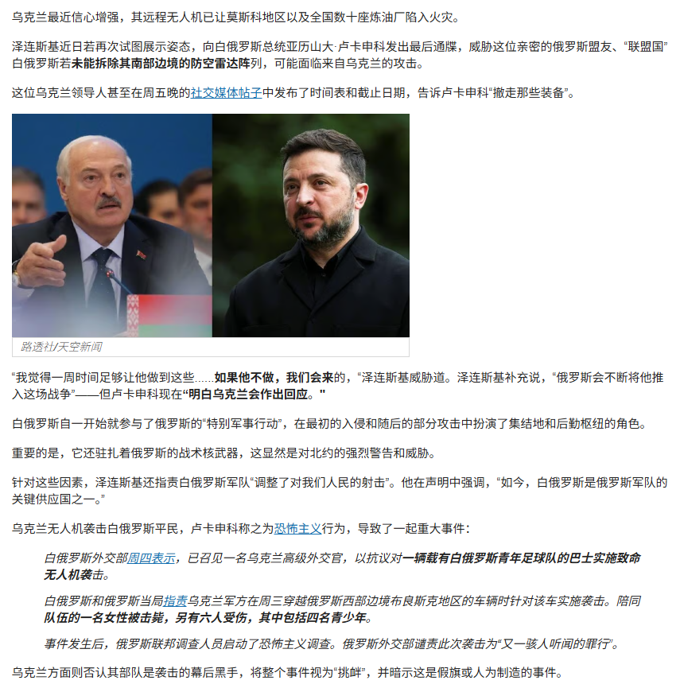
一句话核心： 乌克兰总统泽连斯基公开警告白俄罗斯不要正式参战——俄乌冲突可能外溢的一则风险提示。
背景与关键数据： 转自 zerohedge 的短讯。核心是泽连斯基对白俄罗斯发出"威胁/警告"，要其不要正式加入对俄方的战争。白俄罗斯一直被视为俄罗斯的盟友和后勤通道，若"正式参战"会让冲突范围扩大。
图片解读： 一张 zerohedge 文章截图，配相关人物/事件配图。受图片分辨率所限，正文细节有限，但主旨清楚：俄乌冲突的"外溢风险"——是否有第三方正式下场。
为什么重要： 和帖 2（美伊和谈）放在一起看，今天 Jason 给了两条相反方向的地缘信号：中东在"降温"、东欧在"升温风险"。对市场而言，地缘冲突扩大化通常利好避险资产（黄金、美债、美元）、利空风险资产和欧洲资产，并可能扰动能源/粮食价格（乌克兰、俄罗斯都是大宗出口国）。这类消息更多是"风险监测"，需要持续跟踪是否落地。
延伸知识： 市场对地缘风险的反应有个规律叫**"buy the rumor, sell the news"反过来的版本**——真正的冲突升级会快速推升避险溢价，但若只是口头警告、没有实质行动，市场往往很快"脱敏"。判断地缘消息的市场含义，关键看是否改变实物供给（能源、粮食、航运），否则多半是短期情绪扰动。
帖 6 ｜14:32 ｜人民币与美元"双强"之谜 #金融#
帖子原文：
申万宏源：2025年7月以来，人民币一直在演绎与美元的"双强"格局；美元震荡走强4.0%，但人民币依然逆势升值6.0%。当前，人民币与美元的12个月动态相关性已回落至-0.27；这是"811"汇改以来动态相关性的第二次转负，背景是年初以来，人民币"结汇潮"仍在延续。1-5月，银行代客结售汇顺差规模高达2631亿美元，为2010年以来同期最高。4月和5月，人民币不含远期履约的结汇率分别录得50.2%、50.9%，较年初显著走低。但6月以来，美元兑人民币询价成交量已边际企稳，且仍维持在相对高位。当前远期结汇率维持高位，或也说明在人民币持续升值背景下，贸易商整体也提高了对出口收入的套保比率。2023-2025年积累的潜在待结汇资金规模约4000亿美元，显著高于上一轮人民币升值周期前（2019-2021年）积累的2293亿美元，后续结汇力量仍有释放空间。#金融#
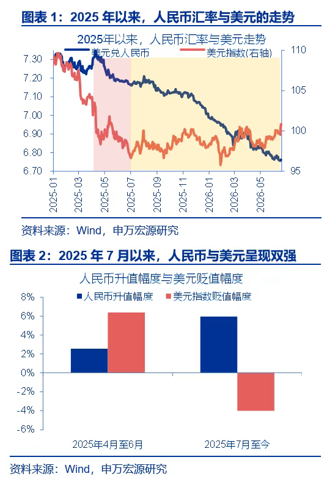
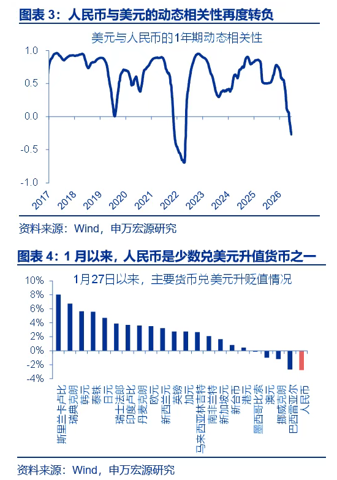
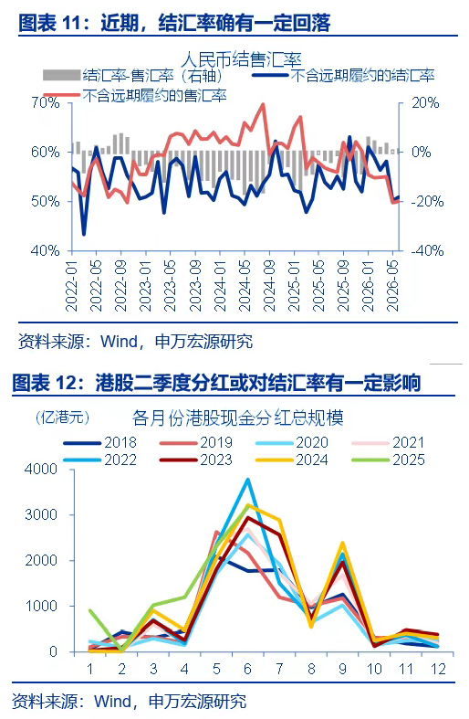
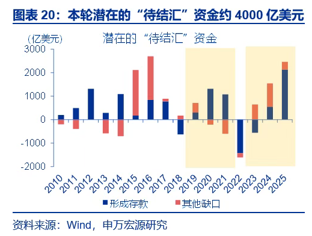
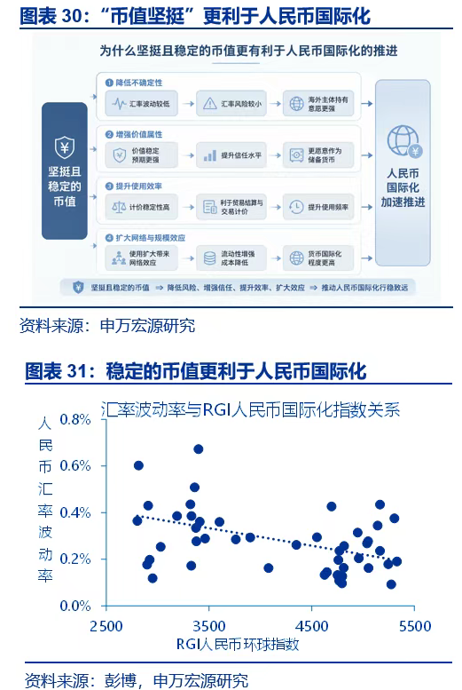
一句话核心： 通常美元强、人民币就该弱，但 2025 年 7 月以来两者"双双走强"——背后是出口商手里攒了一大堆没换成人民币的美元（约 4000 亿），正在持续结汇推升人民币。
背景与关键数据（把术语翻译成大白话）：
- "双强"：2025 年 7 月以来美元（指数）涨了 4.0%，但人民币不仅没贬、反而升值 6.0%。
- "12 个月动态相关性 -0.27"：相关性为负，意味着"美元涨、人民币也涨"反着常理走；这是 2015 年"811 汇改"以来第二次转负。
- "结汇"：出口商赚到美元后，把美元卖给银行、换成人民币，叫结汇。大家都抢着结汇＝"结汇潮"，会推高人民币需求、令其升值。
- 关键数字：1-5 月银行代客结售汇顺差 2631 亿美元（2010 年以来同期最高，说明换汇需求极旺）；但 4、5 月结汇率（赚到的美元里真正换成人民币的比例）只有 50.2%、50.9%，比年初低——说明很多美元还没换。
- "待结汇资金约 4000 亿美元"：2023-2025 攒下来、还没换成人民币的美元约 4000 亿，远高于上一轮升值周期（2019-2021）的 2293 亿——这是后续推动人民币升值的"弹药库"。
图片解读：
- 图表1：2025 年以来人民币汇率（左轴）与美元指数（右轴）走势，直观展示"双强"。
- 图表2：分两段对比"人民币升值幅度 vs 美元贬值幅度"，显示 2025 年 7 月后人民币升值更明显。
- 图表3：美元与人民币的 1 年期动态相关性，曲线在 2026 年再次跌破 0（转负）。
- 图表4：1 月以来主要货币兑美元升贬值排序，人民币是少数升值的货币之一（柱状图里为正）。
- 图表11：结汇率（蓝）与售汇率（红），结汇率近月有所回落。
- 图表12：港股二季度分红规模的季节性，提示分红购汇可能对结汇率有阶段性影响。
- 图表20：本轮潜在"待结汇"资金约 4000 亿美元的拆解（形成存款 + 其他缺口），近三年明显高于历史。
为什么重要： 人民币逆势升值，反映的是贸易顺差强 + 出口商持汇待结的强基本面，也和今天"全球资金回流非美资产"的大主题一致。对市场含义：人民币升值通常利好以人民币计价的资产（A股、港股）、利好人民币国际化叙事，但对出口企业的汇兑收益是把双刃剑（升值会侵蚀出口竞争力，所以贸易商提高了远期套保比率来锁汇）。那 4000 亿"待结汇弹药"意味着升值还有后劲。
延伸知识： 结汇率是观察汇率预期的"温度计"——出口商如果预期人民币要升值，就会赶紧把美元换成人民币（结汇率上升）；如果预期贬值，就囤着美元（结汇率下降、持汇观望）。当前"待结汇资金高企"其实暗含一种张力：这些美元迟早要换，一旦集中结汇，会形成对人民币的持续买盘，但也可能因为预期反转而推迟，所以央行和分析师都盯着这个指标。
帖 7 ｜14:37 ｜广发高频跟踪：CPI 走平、PPI 回踩 #经济数据#
帖子原文：
广发：高频模型之下，猪价油价分化、但更综合的生意社BPI指数显示环比转负，预计6月CPI走平、PPI有所回踩，"PPI-CPI"剪刀差有所收窄（2.70%→2.58%）。社零步入低基数期、出口受益于全球AI基建红利，地产销售同环比回踩，汽车销量同比降幅有所收敛。经统计局公布值调整后，预计5-6月实际GDP为4.11%、4.17%；5-6月名义GDP分别为6.06%、6.03%。截至6月第三周，2026H1实际GDP为4.6%。
我们在2022年即认为黄金与美债实际利率并非彻底背离，而是久期出现了时变。黄金与利率之间存在"正凸性"特征，中长期去美元叙事催升了"凸性"放大，最终形成黄金定价与利率的"非线性"涨多跌少关联。2026年以来，伴随着黄金中长期催化降温，黄金重新回归实际利率框架，这本质上也是久期拉长、正凸性回落、"非线性"程度走平的表现。
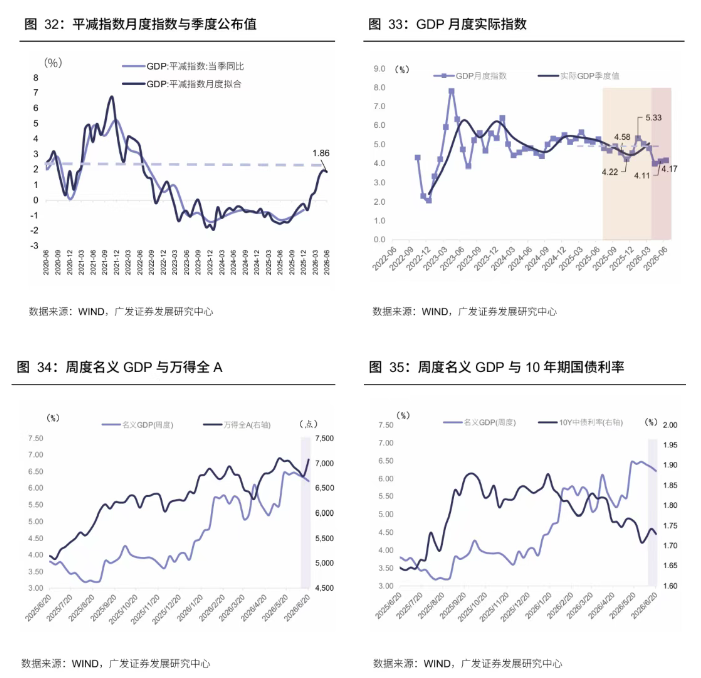
一句话核心： 用高频数据"抢跑"测算，6 月中国通胀偏弱（CPI 走平、PPI 回踩），实际 GDP 增速大致 4.1%-4.2%，上半年约 4.6%；后半段还点评了黄金重新回归"实际利率"定价。
背景与关键数据（拆解）：
- 高频模型 / 生意社 BPI：用每天/每周更新的价格、销量数据（猪价、油价、大宗商品 BPI 指数等）抢在官方公布前估算 CPI、PPI、GDP。BPI 环比转负＝大宗价格走弱。
- CPI 走平、PPI 回踩：CPI 是消费者物价、PPI 是工业出厂价。两者都偏弱。
- "PPI-CPI 剪刀差"收窄（2.70%→2.58%）：这里的"剪刀差"是 CPI 与 PPI 的差值（因为 PPI 为负、CPI 偏弱）。它衡量上游（工业）和下游（消费）的利润分配；差值收窄通常意味着中下游企业的成本压力/利润格局在边际变化。
- GDP 测算：5-6 月实际 GDP 约 4.11%、4.17%，名义 GDP 6.06%、6.03%，2026 上半年实际 GDP 约 4.6%。
- 结构亮点：出口受益"全球 AI 基建红利"，地产销售回踩，汽车降幅收敛。
- 黄金部分：作者认为黄金不是与"美债实际利率"彻底脱钩，而是"久期/凸性"变化；2026 年随着去美元叙事降温，黄金重新回到实际利率框架定价。
图片解读： 一组广发的高频跟踪图（图 32-35）：平减指数月度跟踪与季度公布值对比、GDP 月度实际指数、周度名义 GDP 与万得全A、周度名义 GDP 与 10 年期国债利率。整体在演示"用高频指标拟合并领先官方 GDP"的方法，也展示名义 GDP 与股市/国债利率的同步关系。
为什么重要： 通胀偏弱、名义 GDP（约 6%）与实际 GDP（约 4.6%）之间的差（即 GDP 平减指数）偏低，说明物价对增长的贡献小、经济"体感"偏冷——这是理解"为什么数据增长但很多人没感觉"的关键。对资产：低通胀+弱 PPI 利好债券、压制周期股盈利；黄金重回实际利率框架意味着美联储降息预期、实际利率下行会重新成为金价主驱动。
延伸知识： 名义 GDP vs 实际 GDP：名义是按当年价格算的"含水分"增长，实际是剔除物价后的"真增长"，两者之差就是 GDP 平减指数（最广义的通胀）。当名义和实际差距很小（像现在 6% vs 4.6%，平减指数才约 1.4%），说明经济缺乏"温和通胀"，企业涨价难、名义收入和利润增长吃力——这正是当前中国"低通胀困扰"的数据画像。
帖 8 ｜14:42 ｜李迅雷：相信逻辑，不要相信奇迹 #经济数据#
帖子原文：
李迅雷："求是网"的评论员文章提出的四大建议，实际上是着眼于改革的四大举措，属于"大因果"。但如果总是停留在理念上或纸面上，现在还不去推进改革，那么，危机则符合因果律。这也是我总喜欢讲的"相信逻辑，不要相信奇迹"。#经济数据#
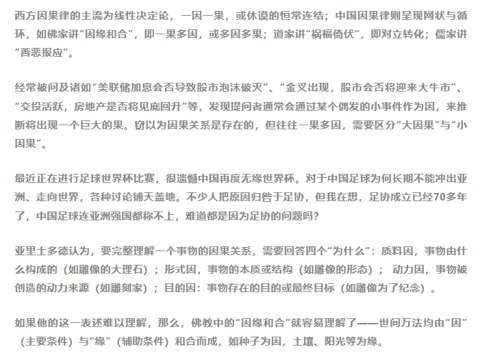
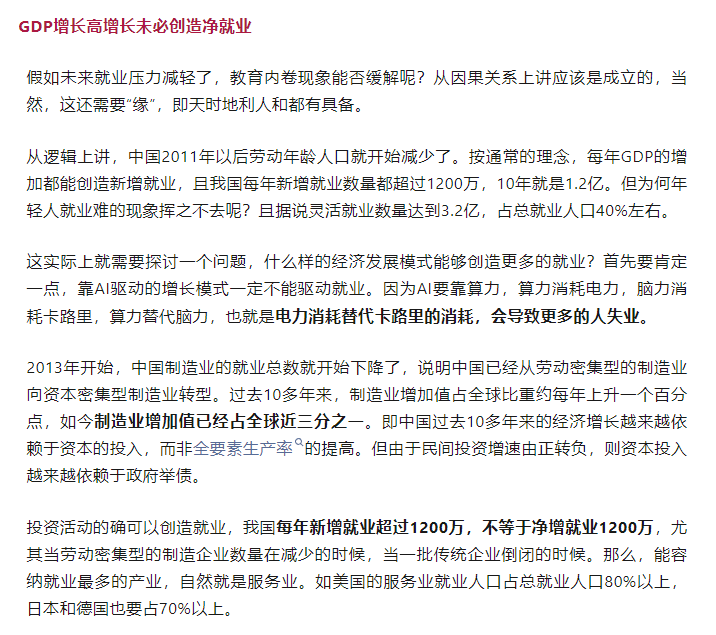
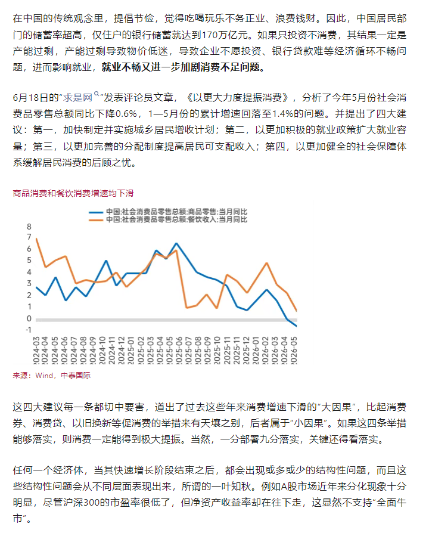
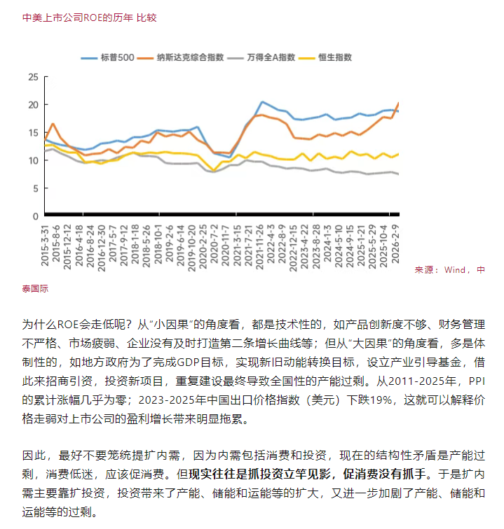
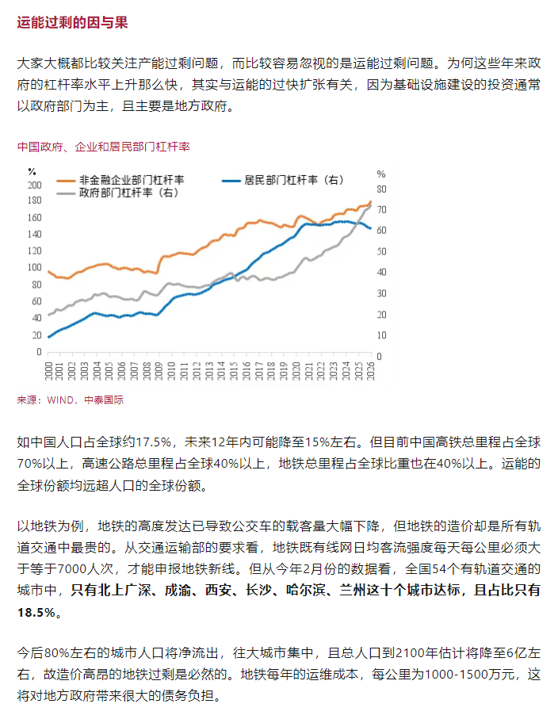
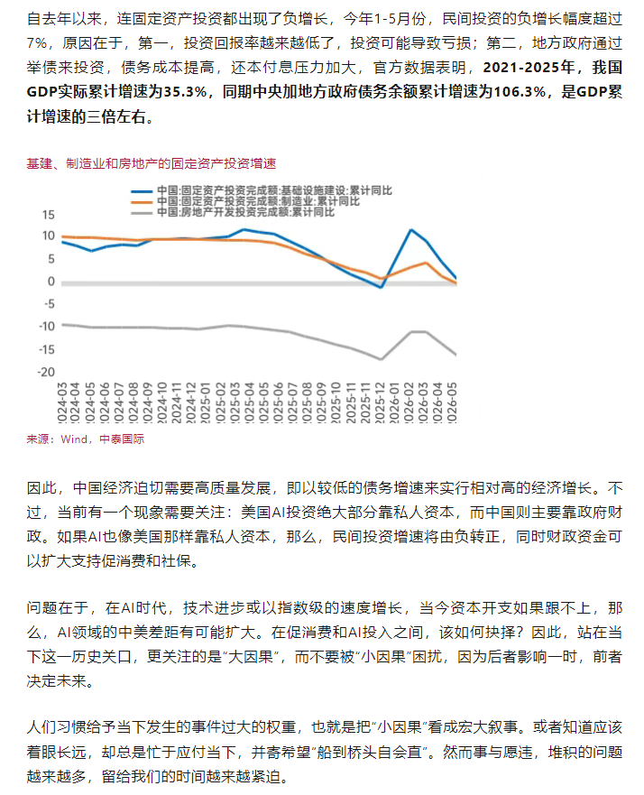
一句话核心： 经济学家李迅雷借"因果律"立论——真正的改革（"大因果"）如果只停在纸面、迟迟不推，那么危机也是迟早会来的"因果报应"；他主张"相信逻辑、不要相信奇迹"。
背景与关键数据： 这是李迅雷一篇长文的节选。逻辑链条：
- 方法论（图1）：西方因果律是"一因一果"的线性思维；中国/佛家讲"因缘和合"——一果多因。分析经济要区分"大因果"（结构性根因）和"小因果"（偶发小事件）。
- 就业悖论（图2）："GDP 增长高增长未必创造净就业"。中国 2011 年后劳动年龄人口开始减少，每年新增就业超 1200 万、十年 1.2 亿，但年轻人就业难依旧。原因：靠 AI/算力驱动的增长替代脑力劳动，"电力消耗替代卡路里消耗，会导致更多人失业"；制造业 2013 年起就业总数下降，经济越来越依赖资本投入而非全要素生产率。
- ROE 下行（图3、图4）：中美上市公司 ROE 对比，美国（标普500、纳指100）ROE 高且回升，中国（万得全A、恒生）ROE 走低。根因是产能过剩——2011-2025 年 PPI 累计涨幅几乎为零、2023-2025 年中国出口价格指数累计跌约 19%，价格上不去自然压低盈利。
- 政策含义（图5、图6）：主张不要老想着扩投资（投资创造产能，加剧过剩），应内需（消费）兜底；中国服务业就业占比仍低（美国 80%+、日德 70%+），是吸纳就业的方向。
图片解读：
- 图1：纯文字，讲因果律方法论（亚里士多德"四因说" vs 佛家"因缘和合"）。
- 图2：纯文字，论证"GDP 高增长未必创造净就业"，提到灵活就业 3.2 亿、占总就业约 40%。
- 图3：一段关于 PPI/价格的文字 + 一张小折线图。
- 图4：中美上市公司 ROE 历年比较折线图（标普500、纳指100、万得全A、恒生指数），直观显示美股 ROE 抬升、中国指数 ROE 下行。
- 图5：制造业增加值占比相关图 + 文字（制造业增加值已占全球近三分之一）。
- 图6：再次用图表佐证产能过剩、出口价格下行对 ROE 的拖累。
为什么重要： 这条是今天"中国结构之辩"里最尖锐的一极。它和帖 3（粤开"新动能利润强但养人弱"）形成呼应又互补：粤开看到了上市公司层面的转型成色，李迅雷点出了宏观层面的隐忧——增长不创造就业、产能过剩压低回报、价格通缩。对投资者，这是"为什么 A股整体 ROE 偏低、为什么需要靠消费而非投资破局"的深度解释，也解释了今天人民币虽强但企业盈利偏弱的矛盾。
延伸知识： 产能过剩 → 通缩 → ROE 下行是一条经典的链条。企业一窝蜂扩产能，供给远超需求，只能打价格战（PPI 长期为负、出口价格跌），结果是"增产不增收、增收不增利"，净资产收益率被磨低。这就是为什么经济学家反复强调"去产能"和"扩内需"——前者修复供需、后者创造需求，都是为了让价格和利润回到正常轨道。李迅雷那句"相信逻辑，不要相信奇迹"，本质是提醒：结构问题不会自己消失，不改革，结果（危机）就符合"因果律"。
帖 9 ｜14:45 ｜穆迪：美国"K 型经济"依旧稳固 #其他国家经济#
帖子原文：
穆迪：美国K型经济依然稳固，基于美联储《金融账目与消费者金融调查》对2026年第一季度各收入群体个人支出的最新估算。收入分布前20%的美国人（年收入超过17.5万美元）占支出的近60%。前20%的人推动着支出和经济。过去一年他们的支出增长了6.5%，过去三年年均增长了7.4%，远高于CPI通胀率分别为2.7%和2.9%。但底层80%人群的支出远低于通胀。难怪大多数美国人对自己的财务状况和更广泛的经济感到不满。#其他国家经济#
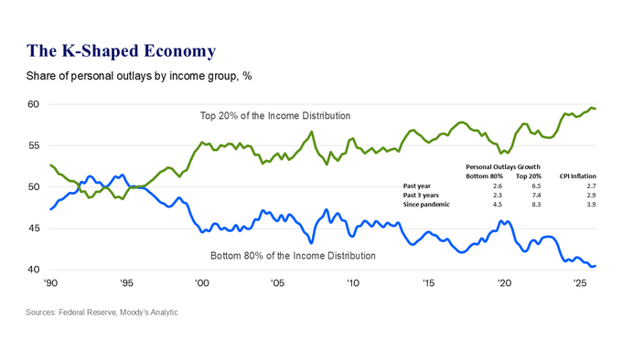
一句话核心： 美国经济是"K 型"的——最富的 20% 撑起了近 60% 的消费、花钱增速远超通胀，而底层 80% 的支出连通胀都跑不赢，所以多数人对经济没好感。
背景与关键数据： 穆迪基于美联储《金融账目与消费者金融调查》估算 2026 年一季度各收入群体支出。要点：
- 前 20%（年收入 > 17.5 万美元）占全部消费支出近 60%；
- 他们的支出过去一年增 6.5%、过去三年年均增 7.4%，远高于 CPI 通胀（2.7% / 2.9%）——即富人实际消费在强劲扩张；
- 底层 80% 的支出增速低于通胀，意味着扣掉物价后实际在缩水。
图片解读： 图表标题 The K-Shaped Economy（K 型经济），画的是"各收入组占个人总消费支出的比重（%）"，时间从 1990 到 2025+。**绿线（前 20%）**一路向上、逼近 60%；**蓝线（后 80%）**一路向下、跌到约 41%。两线在 2000 年前后"剪刀张开"，差距越拉越大。图中小表格列出消费支出增速：前 20% / 后 80% / CPI 分别为——过去一年 6.5 / 2.6 / 2.7；过去三年 7.4 / 2.3 / 2.9；疫情以来 8.3 / 4.5 / 3.9。一目了然：富人远跑赢通胀，普通人跑输。
为什么重要： "K 型"解释了一个常见困惑——为什么宏观数据（消费、GDP）还不错，但民调里大多数人觉得经济差？ 因为总量被高收入人群撑着，结构上多数人体感很冷。对市场：高端消费/奢侈品、富人相关资产更稳；大众消费、低端零售承压。这也是政治情绪（对经济不满）的经济根源。注意它和帖 3、帖 8 的中国"结构分化"形成跨国对照——中美都在经历"总量 OK、结构撕裂"。
延伸知识： "K 型复苏/经济"指经济在冲击后沿两个方向分化：一部分（高收入、资产持有者、科技行业）向上走，另一部分（低收入、劳动者、传统行业）向下走，形状像字母 K。它和"基尼系数""财富效应"密切相关——富人消费由资产价格（股票、房产）驱动，资产涨他们就敢花；普通人消费靠工资，工资跑不赢通胀就只能节衣缩食。这是理解当代发达经济体"数据与体感背离"的核心框架。
帖 10 ｜14:49 ｜Charlie：资本用脚投票 #股市#
帖子原文：
charlie：资本用脚投票。#股市#
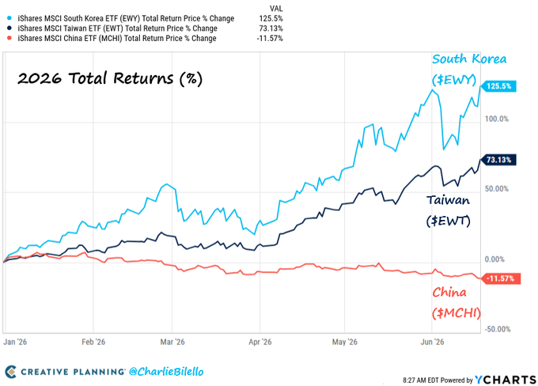
一句话核心： 一张图说尽今年的"资金选择"——韩国、台湾股市暴涨，中国股市垫底，钱往哪走、用脚投出来了。
背景与关键数据： 转自 Charlie Bilello（Creative Planning）的常用对比图。展示三个 iShares MSCI 国家 ETF 今年（2026）的总回报：
- 韩国 EWY：+125.5%
- 台湾 EWT：+73.13%
- 中国 MCHI：-11.57%
图片解读： 折线图标题 2026 Total Returns (%)，横轴 Jan'26 到 Jun'26。蓝线（韩国 EWY）一骑绝尘冲到 +125.5%，深色线（台湾 EWT）+73.13% 居中，红线（中国 MCHI）全年大部分时间在 0 轴下方、收于 -11.57%。三条线的分化极其鲜明：东北亚科技市场狂欢、中国掉队。
为什么重要： "资本用脚投票"是 Jason 想强调的态度——不管叙事如何，钱的流向最诚实。今年全球资金明显涌向有 AI/半导体出口红利的韩国、台湾（呼应帖 4 的"亚洲科技公司盈利提升"、帖 7 的"出口受益全球 AI 基建红利"），而中国市场表现落后（呼应帖 8 的 ROE 下行、产能过剩、通缩）。这条把今天的两条主线缝在一起：全球资金再平衡 + 中国结构性挑战——结果就是这张分化的回报图。
延伸知识： 韩国（三星、SK海力士）和台湾（台积电）是全球 AI 算力供应链的核心——内存和先进制程的"卖铲人"。AI 资本开支爆发时，这些"卖铲人"的盈利和股价最先受益，这正是 EWY、EWT 暴涨的产业逻辑。但也要警惕：单一年份 +125% 这种涨幅往往包含估值拔高 + 货币升值（韩元）+ 盈利改善多重因素叠加，回报越极端、未来均值回归的风险也越值得关注。
今日全图索引
| 帖号 | 时间 | 主题 | 标签 | 图片文件 |
|---|---|---|---|---|
| 1 | 13:53 | 高盛下调全球手机出货（量减价增） | #经济数据# | post1_img1.png |
| 2 | 14:09 | 美伊瑞士开启和谈、万斯称有进展 | #金融# | post2_img1.png ~ post2_img6.png |
| 3 | 14:19 | A股新动能 vs 旧动能（利润强、养人弱） | #经济数据# | post3_img1.png ~ post3_img6.png |
| 4 | 14:22 | 新兴市场盈利四年来首超预期 | #股市# | post4_img1.png |
| 5 | 14:25 | 泽连斯基警告白俄罗斯勿正式参战 | #金融# | post5_img1.png |
| 6 | 14:32 | 人民币与美元"双强"、4000亿待结汇 | #金融# | post6_img1.png ~ post6_img5.png |
| 7 | 14:37 | 广发高频：CPI走平/PPI回踩、上半年GDP约4.6% | #经济数据# | post7_img1.png |
| 8 | 14:42 | 李迅雷：增长未必创造就业、产能过剩压ROE | #经济数据# | post8_img1.png ~ post8_img6.png |
| 9 | 14:45 | 穆迪：美国K型经济（前20%占近60%消费） | #其他国家经济# | post9_img1.png |
| 10 | 14:49 | Charlie：2026回报 韩+125%/台+73%/中-12% | #股市# | post10_img1.png |
本报告由自动化任务生成，内容为对 Jason 不跪当日帖子的转写与通俗解读，仅供学习参考，不构成任何投资建议。